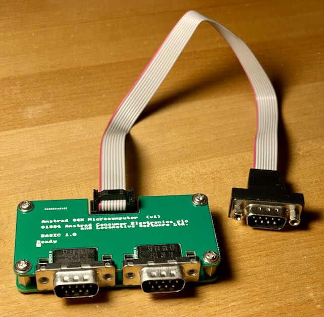
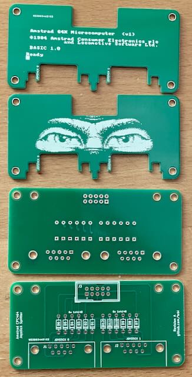

Ich habe die Platine aufgebaut und getestet.
Projekt-Homepage • Interakiver Bestückungsplan • Schaltplan

Mit diesem Adapter kann man zwei Atari/C64 Joysticks am CPC anschließen.
| Komponente | Anzahl | Preis | Anbieter |
| Platine | 2 | €1.00 | |
| 1N4148 Diode | 12 | €0.02 | Reichelt |
| 2x5 Stiftleiste mit Rahmen | 1 | €0.34 | Reichelt |
| M3 Schraube | 8 | €0.01 | Reichelt |
| M3 6mm Abstandhalter Buchse/Buchse | 4 | €0.01 | Reichelt |
| 90° D-Sub-9 Stecker | 2 | €0.36 | Reichelt |
| nur Platine | €1.00 | ||
| Bausatz | €1.74 |
| Komponente | Anzahl | Preis | Anbieter |
| D-Sub-9 Stecker für Flachbandkabel | 1 | €0.64 | Reichelt |
| 2x5 Buchsenleiste für Flachbandkabel | 1 | €0.08 | Reichelt |
| 9 poliges Flachbandkabel, 1m | 0.3 | €0.97 | Reichelt |
| Bausatz | €1.69 |